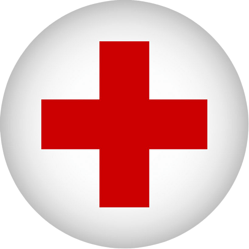

ARC ALS
Advanced Life Support may be coordinated when a clinical team or employer specifically needs Red Cross ALS.
Ask about ARC ALSUse this hub when your employer, school, or program specifically asks for American Red Cross certification, including practical CPR/AED and first aid recognition topics aligned to current first aid guidance.

ARC categories remain available here even while new public dates are being added, with routing for CPR/AED, first aid, BLS, and workplace emergency recognition needs.
American Red Cross BLS options for healthcare providers and students who need ARC specifically.
For help choosing a class path, call or text 910-395-5193.
Red Cross CPR/AED training for workplace and general certification needs when first aid is not required, including CPR, AED use, and choking response.
For help choosing a class path, call or text 910-395-5193.
Red Cross First Aid/CPR/AED for workplaces, schools, and programs that require ARC certification and practical first aid recognition.
For help choosing a class path, call or text 910-395-5193.
From the mountains to the coast, 910CPR helps healthcare teams, dental offices, schools, workplaces, and students meet real certification requirements with clear, organized classes.
Students often mention knowledgeable instructors who keep CPR, BLS, ACLS, and PALS requirements clear.
Renewing providers regularly describe the classes as organized, direct, and respectful of their time.
Reviewers commonly point to clear explanations, hands-on practice, and a class experience that feels manageable.
No travel. No scheduling headaches. Your team already knows where to go.
Just need a seat for yourself? Scroll down. We’ve got you covered.
View Upcoming Classes